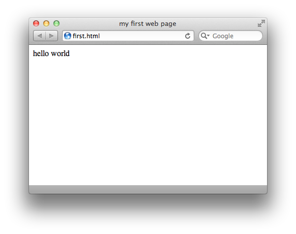

Introduction
Remember Color by Numbers coloring books? HTML and CSS kind of work like that. Bear with me: a Color by Numbers picture is a black and white drawing, with a number inside each closed space, and a table showing which color corresponds to which number. In this analogy, HTML represents the black and white drawing, and CSS represents the table of colors.
Let’s start with HTML. HTML stands for Hypertext Markup Language. Basically, it’s text that can link to other texts. So since it’s text-based, you don’t need any fancy software to write it. Notepad (on Windows) or TextEdit (on Mac OS X) will do the job just fine. If you use TextEdit, you need to follow some quick instructions to set it up for HTML first.
The key concept of HTML is tags. Tags encompass your content, and define its structure on the page. Let’s jump right into some of them. In HTML, a tag is always formed by bookending a term with less-than and greater-than symbols. So, a “highlight” tag would look like <highlight>. (Note, there is no actual highlight tag… yet).
Since tags encompass unique sections of content, there must be a beginning tag and an ending tag (for most things, but we’ll get more into this later). The beginning tag is what we already know: <highlight>. The ending tag looks very similar, but adds a forward slash (same key as the question mark) before the tag name: </highlight>.
So let’s say we have a sentence of really exciting text that we want highlighted when we drop it into our HTML document. The coding is simple! It would look just like this:
<highlight>the sandwich uses mayo, not mustard!</highlight>
As an aside, there are different schools of thought on how to layer and present your tags. You can either put them directly around the content (like above), or separate the tag from the content with hard returns and tab indents. Personally, I use a mix of both (and you’ll see examples as we go on), but what you do is your decision.
Getting Started
Now we have the building blocks for our first HTML page. I suggest that you open up a new text window and copy my steps as I go. Whenever I show code in these lessons, it will always be in the Courier font. Code examples that are greyer in color represent code that’s previously been shown, so you can focus on the new additions which will be black.
The first tag that you always use in an HTML document is the <html> tag, believe it or not. So you can begin by typing <html></html>. And look: there’s your page! Right now there’s no content, because there’s nothing in between the tags, but that is a web page, in the absolute worst definition possible. For the sake of clarity, enter a couple hard returns in between your tags so we have room for content:
<html> </html>
Here’s an important note: anything more than one space (hard returns, double spaces, tabs) has no extra effect in HTML output. There is no functional difference between what you have now and the original <html></html> code you used at first.
The next step is to divide your page into actual content and behind-the-scenes magic. I’m referring to are the body and head of the document, respectively. Yes, there are two parts to every HTML site: the head and the body. Their tags are what you’d expect, <head> and <body>. The head always comes before (or rather, on top of) the body, which is conveniently intuitive. So let’s insert the head portion and the body portion within our html tags. Remember that since the head and the body will eventually encompass more stuff, they each need a beginning and an end.
<html> <head></head> <body></body> </html>
You can space them out too, so we have more room to work.
<html>
<head>
</head>
<body>
</body>
</html>
Why, that’s a good-looking web page you have going there! It seems to be coming along nicely. Take a break if you want to, I’m not going anywhere.
The head
Let’s focus on the head first. Most of the stuff in the head section does not appear directly on the page, but rather helps your browser figure out how to present the body. If you’re playing along, this is where we will load up the CSS later, and so this is like the little table that tells you which color goes with which number.
Another important thing in the head section is the title of your page; that is, what displays in your browser’s title bar. And of course, there is a <title> tag to wrap around whatever you’d like your title to be. So let’s add a title to our head section, remembering to close the tag at the end.
<html> <head> <title>my first web page</title> </head> <body> </body> </html>
This is now almost a complete page. If you were to load this HTML file in your browser, you’d get a blank window with your custom title at the top. Congratulations, you’ve just done some real programming!
Like I said, there’s more stuff that we can put in the head, including our CSS code, but let’s leave it at the title for now. On to the content, the meat of the page.
The body
When you think about it, the content of a web page is usually text and graphics. Sure, there are also movies and music increasingly more often, but for the scope of these lessons, we’re going to focus on text and graphics. As you can imagine, these are all loaded up in the body of the HTML page. Actually, we could just insert some text between the body tags right now and leave it at that. Your browser would load it up and have no trouble displaying the text right back at you.
Let’s do it! For whatever reason, a programmer’s first program always outputs the text “hello world.” I don’t get it, but who am I to break tradition, so let’s make our web page contain the text “hello world.” Remember that anything more than one space, like a tab or a hard return, will have no effect on the final rendering of the page. Capitalization will carry over, however.
<html> <head> <title>my first web page</title> </head> <body> hello world </body> </html>
Stop right there and pour a celebratory beverage. You’ve made a complete web page, all by yourself, in raw code without the help of any outside software. Let’s save our progress and see how it looks. When you save the file, be sure to add the extension “.html”, and avoid spaces or fancy symbols (the & symbol is a particular offender). Letters and numbers are nice. I suggest “first.html”.
And that’s it! In your browser, choose “Open” or “Open File” from the File menu and choose your HTML file. It might not be much, but it’s still pretty cool to see. Let’s stop there for now.
Key Concepts
- HTML as “uncolored” content, CSS as the coloring scheme
- Tags
- tags have a beginning and an end (for most content)
- tags within tags are fine as long as they’re nested in order
- tags define the content they encompass
- Every page is contained in the
<html>tag - Every page has a
<head>section and a<body>section in that order, within the<html>tag <head>content doesn’t show up in the browser;<body>content does
Homework
First, download the materials for this lesson. Then from scratch, make a web page with the title “this was easy” and the body text “At first, I was intimidated about creating a website. BUT THEN I BECAME EXCITED!”
When you’ve finished, name your file “homework1.html” and check it against the similarly named file in the Answers folder of the lesson materials.